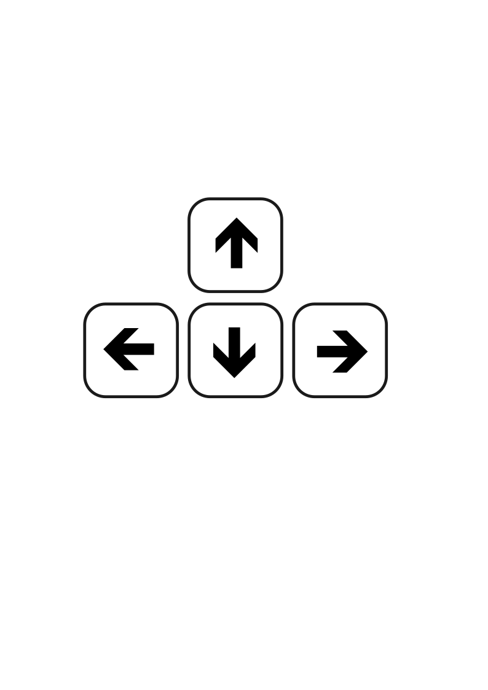
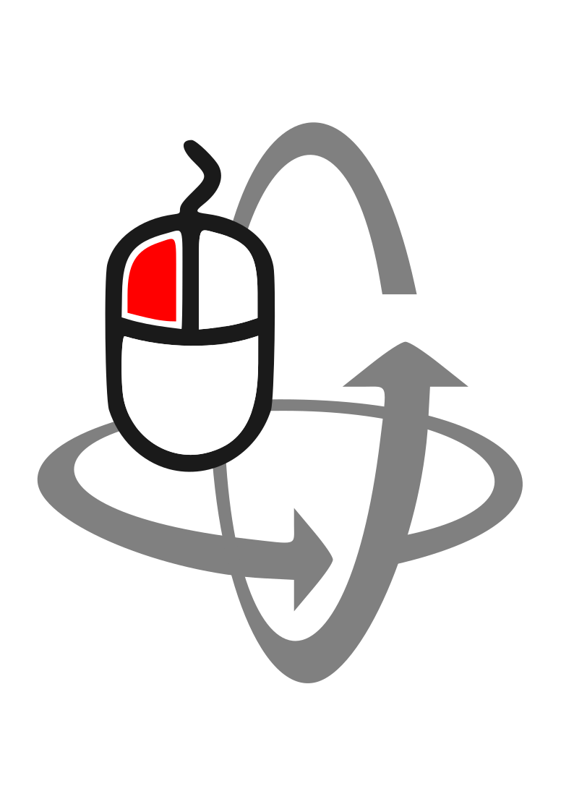
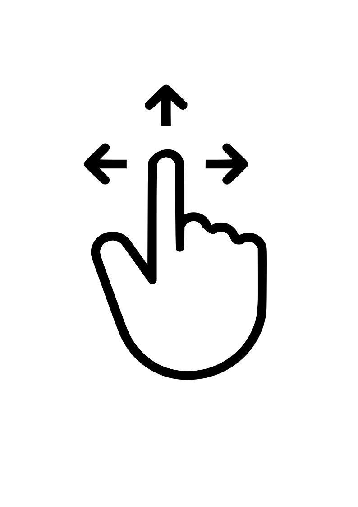
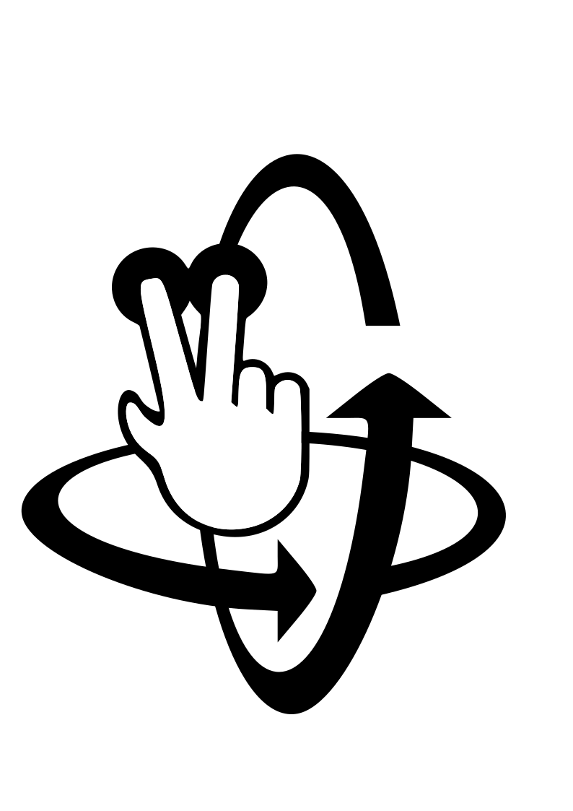

You can move in the virtual environment in 3 different ways:
1) You can use the arrow keys to move forward, backwards, left and right. You can drag the mouse to look up/down or spin;


2) On a mobile device you can drag one finger to move forward and drag 2 fingers to spin;


3) You can use the manual navigation buttons once you are in a gallery.
To go to a gallery click on the corresponding door.
Puedes moverte en el entorno virtual de 3 formas diferentes:
1) Puedes usar las teclas de flecha para moverte hacia adelante, atrás, izquierda y derecha. Puedes arrastrar el mouse para mirar arriba/abajo o girar;
2) En un dispositivo móvil puedes arrastrar un dedo para avanzar y arrastrar 2 dedos para girar;
3) Puedes usar los botones de navegación manual una vez que estés en una galería.
Para ir a una galería, haz clic en la puerta correspondiente.